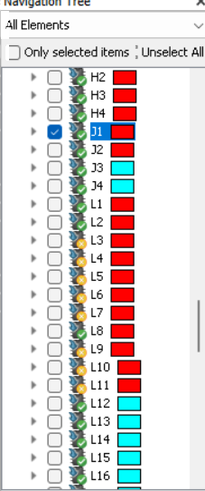
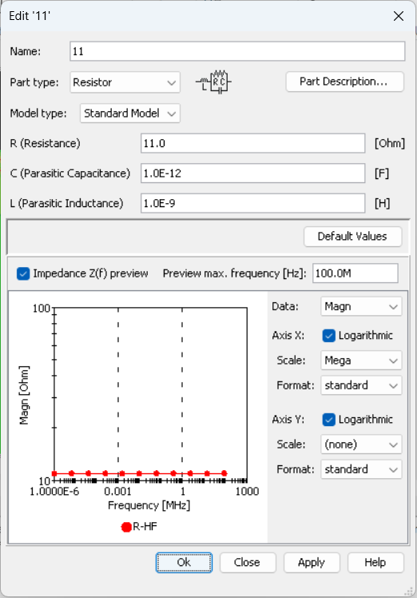
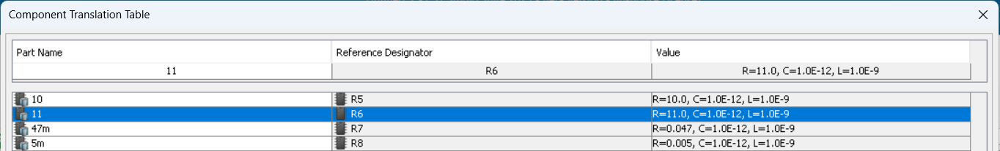

Components and Parts in PCB Studio¶
Mount/unmount components¶
Using the set_mounted_components we can modify which components
are mounted on the PCB.
Preparations:
import cst.interface
from cst.eda import pcb_api
import cst.units
from pathlib import Path
import tempfile
data_dir = Path(cst.interface.install_paths.root()) / "Online Help" / "PythonTutorial" / "data"
de = cst.interface.DesignEnvironment.connect_to_any_or_new()
project_dir = Path(tempfile.mkdtemp())
print(f"Working in temporary directory: {project_dir}")
pcb_file = data_dir / 'cst_phone.tgz'
Now setting mount state:
pcb = pcb_api.PCB.convert_from(pcb_file)
# create a new PCBS project
prj = de.new_pcbs()
# import the PCB to the project
prj.pcbs.set_pcb(pcb)
# Get a dictionary of the mounting status of all components
mounted_components = prj.pcbs.get_mounted_components()
# Show mounted components
print(mounted_components)
# List of components to unmount
unmounted_components = {
"L3": False,
"L4": False,
"L5": False,
"L6": False,
"L7": False,
"L9": False,
"L10": False,
"L11": False,
}
# Modify the mounting status according to the list
prj.pcbs.set_mounted_components(unmounted_components)
The code above will get the mounting status of all components using get_mounted_components and print them.
The method will return a dictionary containing the component names (refdes) as keys
and a bool value indicating if the component is mounted (True) or not (False).
To mount or unmount components, a dictionary of the same layout is needed.
Components that are not listed in the dictionary will not be modified.
In the code, we created a dictionary that list the components to unmount (False).
Using set_mounted_components we update the PCB with this dictionary.
The image below shows the navigation tree afterwards.

The components that are listed in the dictionary in the code are now marked as unmounted (Yellow ‘X’ symbol).
Part Library¶
Using ‘prj.pcbs.import_layout’ to import a PCB from a file also imports its part library.
# continue with `prj`
# Get the part library
part_library = prj.pcbs.get_part_library()
# Modify a part of the Part library
part_library.add_RLC("11", "R", R=11.0, C=1.0e-12, L=1.0e-9)
# Set the modified part library
prj.pcbs.set_part_library(part_library)
Using get_part_library returns the current part library.
On this instance we can use add_RLC to add a new part.
In the code shown above, we added a new resistor with the name “11”. The type of the part is set by a String “R” for a resistor, “L” for a coil and “C” for a capacitor.
The part library has to be set for the new parts to be accessible in the project.
This is done using pcbs.set_part_library on our project.
The image below shows the new part.

Component Translation Table / BOM¶
Now that we have a new part in the part library, we can use it. The assignments between the part library and components are made in the “Component Translation Table” or “BOM”. After creating a new part in the part library as explained in the previous chapter, we want to assign a component to this part.
# continue with `prj`
# Create a Dictionary to set the Part for R6 to the created one
bom = {"R6": "11"}
# Set the modified bom
prj.pcbs.set_bom(bom)
In the code above we create a dictionary “bom”.
Using pcbs.set_bom we can set the created “bom” in our project.
The dictionary should be structured in such a way
that the component names are given as keys and the part names as values.
We set the value of the ‘R6’ component to the created part ‘11’.
The image below shows a section of the “Component Translation Table” and we can see that the newly created part is referenced by “R6”.

The highlighted row shows the component “R6” and its assigned part “11”.